Case Stories
Here are some of the cases our NVS team has successfully assisted with. These examples demonstrate our expertise across a range of orthopaedic and soft tissue procedures.
Please Note: Some images may contain intra-operative photos, X-rays, and CT scans that show surgical procedures.

TPLO Surgery - Norman
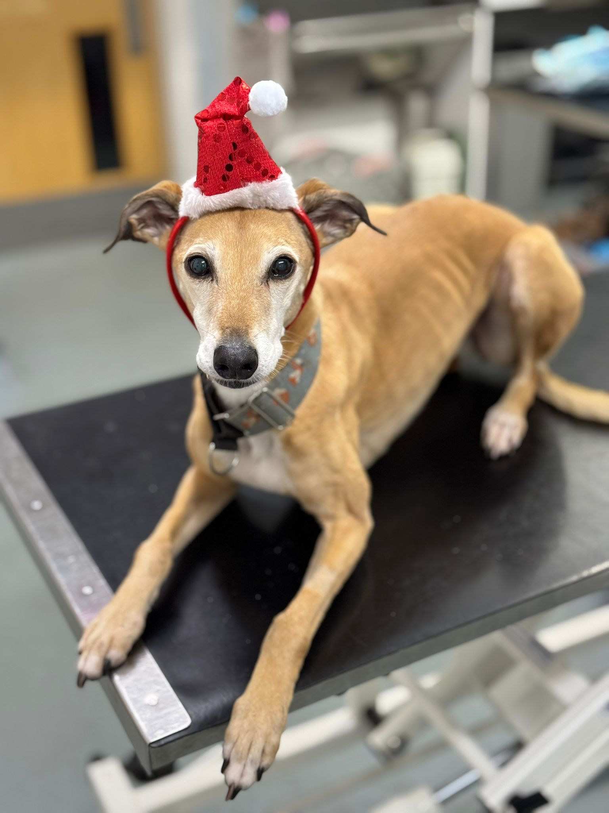
Soft Tissue Reconstruction - Ruby
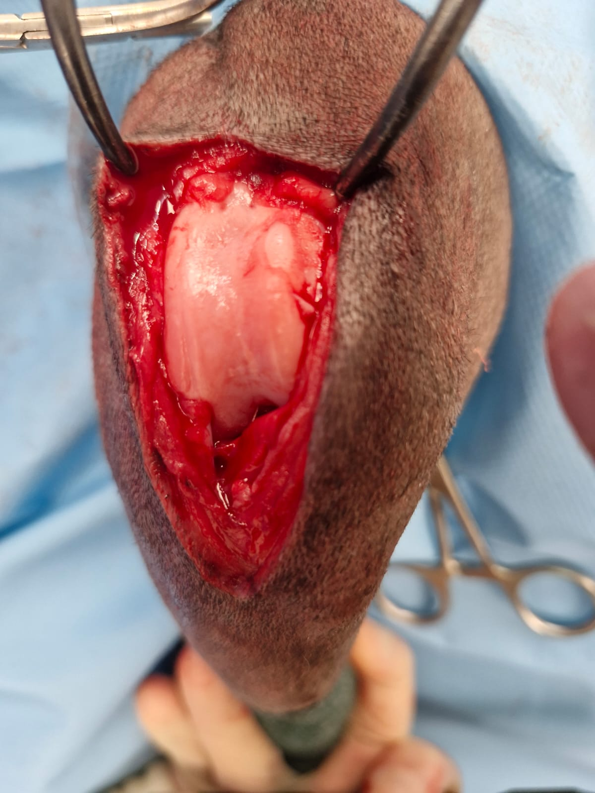
Fracture Repair - Kuba (Pre-op)
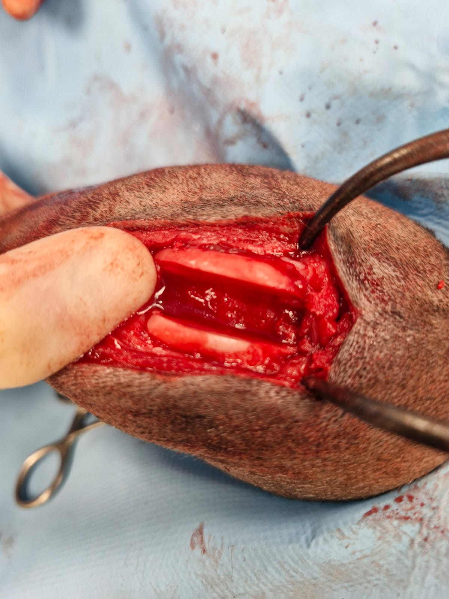
Fracture Repair - Kuba (Post-op)
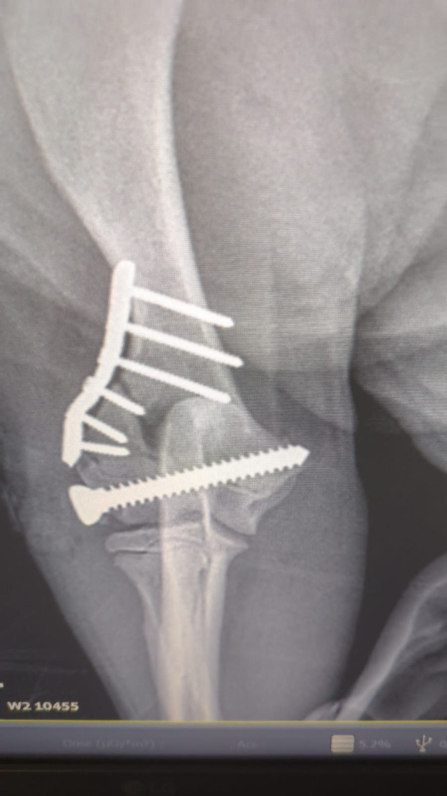
CRCL Disease - Radiograph
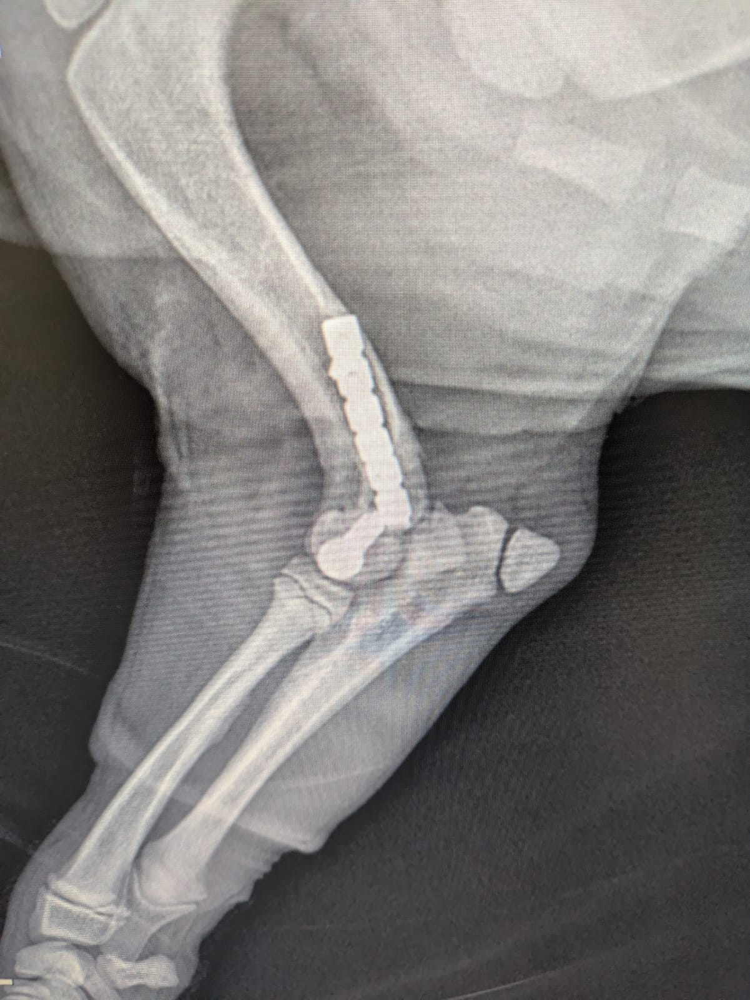
Post-Op Lateral View
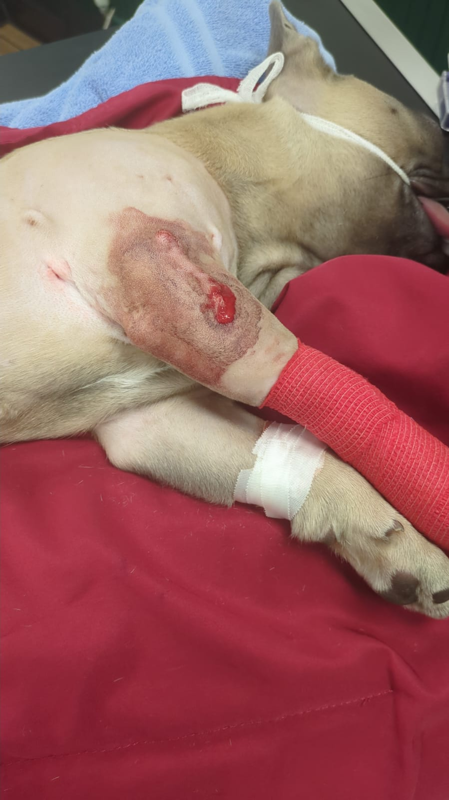
Norman - Post-Op Recovery
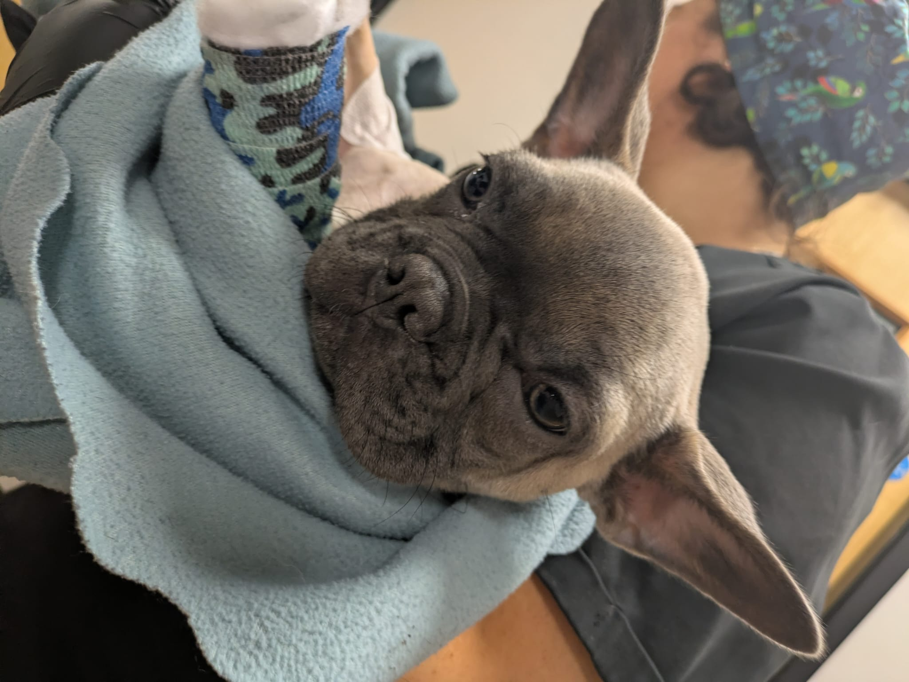
Norman - Follow-up Visit
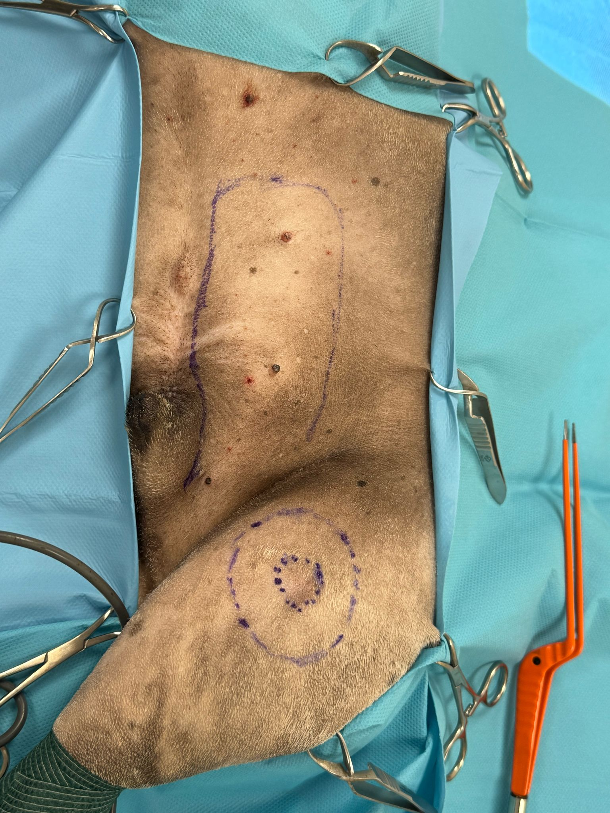
MCT Mass Removal
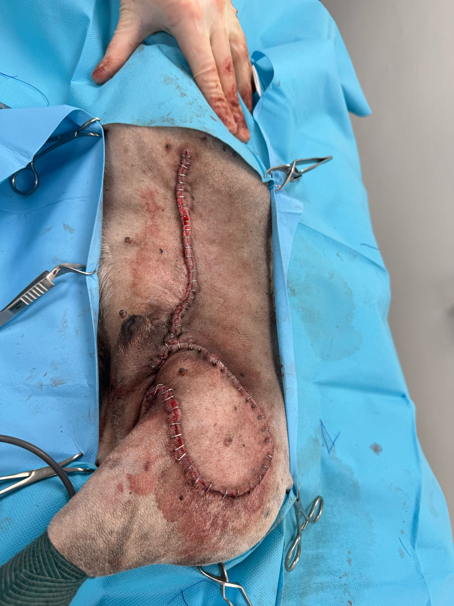
MCT - Post-Operative
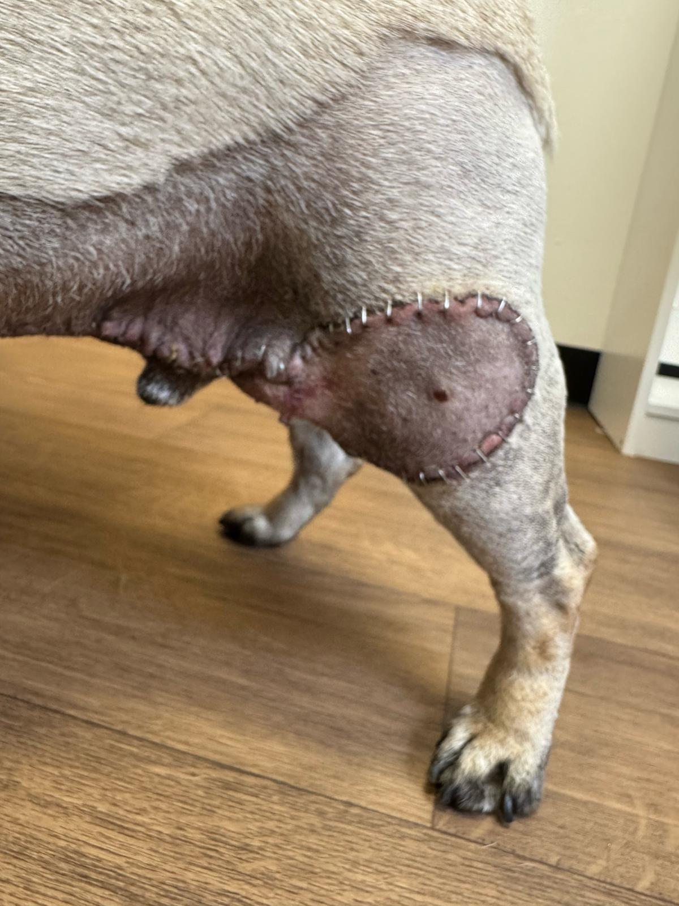
MCT - Recheck Visit
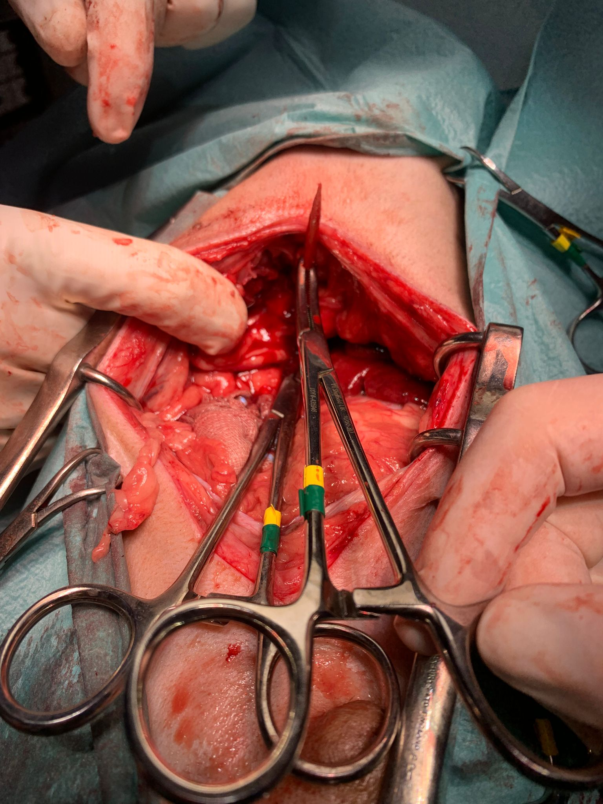
Foreign Body Removal
Want to Share a Case?
If you'd like to refer a case or discuss a complex surgical procedure, please don't hesitate to contact us. We're always happy to provide advice and consultation.